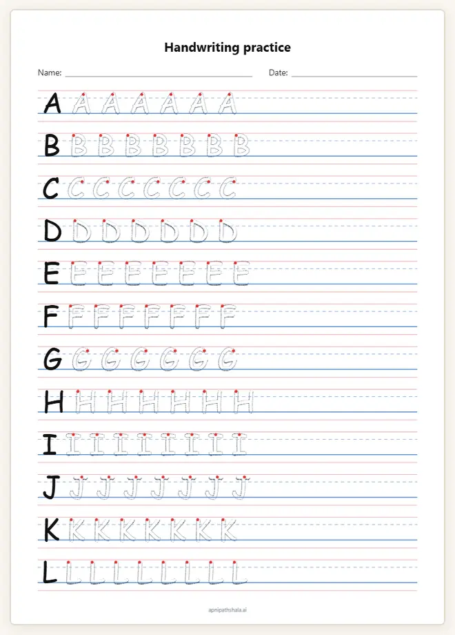

બાળકો માટે અક્ષરલેખન અભ્યાસની વર્કશીટ: મફત અક્ષર ઘૂંટવાની શીટ
ઇન્ટરનેટ પરની મોટા ભાગની ઘૂંટવાની શીટ ફક્ત અંગ્રેજીમાં હોય છે, કે લૉગિન માગે છે. અહીં તમે એક મિનિટમાં પોતાની શીટ બનાવી શકો: અંગ્રેજી અક્ષરો, આંકડા, ગુજરાતી કક્કો કે બીજી ભારતીય વર્ણમાળા, કે બાળકનું નામ, નાના હાથને ફાવે એવા માપમાં.
ટૂંકો જવાબ
હસ્તલેખન અભ્યાસ શીટ ખોલો. “શેનો અભ્યાસ કરવો છે”માં અંગ્રેજી અક્ષરો, આંકડા, કોઈ ભારતીય વર્ણમાળા કે “પોતાના શબ્દો કે નામ” પસંદ કરો. અક્ષરો પર ટૅપ કરીને ફક્ત આજના અક્ષરો રાખો, “અક્ષરનું કદ” પસંદ કરો અને A4 પર છાપવા કે PDF સેવ કરવા “પ્રિન્ટ કરો / PDF સેવ કરો” દબાવો.
5 પગલાંમાં ઘૂંટવાની શીટ
-
શેનો અભ્યાસ કરવો તે પસંદ કરો
હસ્તલેખન અભ્યાસ શીટ ખોલો. “શેનો અભ્યાસ કરવો છે”માં “અંગ્રેજી: કૅપિટલ અક્ષરો”, “અંગ્રેજી: સ્મૉલ અક્ષરો” કે “આંકડા 0 થી 9” પસંદ કરો, કે ગુજરાતી, હિન્દી, મરાઠી, બંગાળી, પંજાબી, ઓડિયા, તમિલ, તેલુગુ, કન્નડ, મલયાલમ કે ઉર્દૂના અક્ષરો. પ્રિવ્યૂ તરત બદલાય છે.
-
અક્ષરો પસંદ કરો
કોઈ અક્ષર પર ટૅપ કરીને તેને શીટમાંથી કાઢો કે પાછો લાવો. “બધા” અને “એકેય નહીં”થી કામ ઝડપથી થાય છે, અને મોટા ભાગની ભારતીય વર્ણમાળામાં “સ્વર” કે “વ્યંજન” પણ પસંદ કરી શકાય. એક દિવસ માટે ચાર-પાંચ અક્ષરો પૂરતા છે.

વર્ણમાળા પસંદ કરો અને જોઈતા અક્ષરો પર ટૅપ કરો. -
કે બાળકનું નામ લખો
“પોતાના શબ્દો કે નામ” પસંદ કરો અને દરેક લીટીમાં એક શબ્દ કે નામ લખો. બાળકોને સૌથી પહેલાં પોતાનું નામ ઘૂંટવું ગમે છે.
-
માપ અને શૈલી નક્કી કરો
“અક્ષરનું કદ”માં નાનાં બાળકો માટે “ખૂબ મોટું”થી શરૂ કરો. ઘૂંટવા માટે “ટપકાંવાળા” કે “આછો રાખોડી” અક્ષરો પસંદ કરો, અને લીટીમાં છેક સુધી અક્ષરો જોઈએ કે જાતે લખવા ખાલી જગ્યા, તે પણ નક્કી કરો. “અક્ષર જ્યાંથી શરૂ થાય ત્યાં ટપકું બતાવો” અંગ્રેજી અક્ષરો અને આંકડામાં મદદ કરે છે. “નામ અને તારીખની લીટી ઉમેરો”થી બાળકના નામ અને તારીખ માટે જગ્યા મળે છે.
-
પ્રિન્ટ કરો કે PDF સેવ કરો
“પ્રિન્ટ કરો / PDF સેવ કરો” દબાવો અને A4 કાગળ પસંદ કરો. શીટ સાચવી રાખવા, કે WhatsApp પર મોકલીને દુકાનેથી છપાવવા, પ્રિન્ટરની જગ્યાએ Save as PDF પસંદ કરો.

ઘૂંટવાની શીટ, A4 પર પ્રિન્ટ માટે તૈયાર.
અક્ષરલેખનના અભ્યાસ માટે સૂચનો
- થોડું પણ રોજ કરવું સૌથી સારું: એક લાંબી બેઠક કરતાં રોજની 10થી 15 મિનિટ વધારે કામ લાગે છે.
- દરેક લીટીનો પહેલો અક્ષર નમૂનો છે. બાળક પહેલાં આછા અક્ષરો પર ઘૂંટે છે, પછી ખાલી જગ્યામાં જાતે લખે છે.
- શરૂઆત બહુ મોટા અક્ષરોથી કરો. બાળક જેમ શીખે તેમ અક્ષરો નાના કરો અને લીટીઓ વધારો. અંગ્રેજી શીટમાં ચાર લીટી હોય છે; ભારતીય લિપિઓમાં એ લિપિને અનુરૂપ લીટીઓ આવે છે.
- પેન્સિલ અને કાગળ પહેલાં નાનાં બાળકોને મોટા અક્ષરો આંગળીથી, રેતીમાં કે સ્લેટ પર દોરવા દો. બાળક પેન્સિલ કેવી રીતે પકડે છે તે જુઓ, અને તેની મહેનતનાં વખાણ કરો.
નવાં મફત ટૂલ અને હિન્દીમાં AIના પાઠ મેળવો
અમારી ઇમેઇલ યાદીમાં જોડાઓ: નવી મફત ઍપ્સ, નવી માર્ગદર્શિકાઓ અને AI પર હિન્દી વીડિયો પાઠની માહિતી તમને મળતી રહેશે. કોઈ સ્પૅમ નહીં.
ફક્ત પુખ્ત વયના લોકો (18+) માટે. તમે ગમે ત્યારે નામ કઢાવી શકો છો.
અમે આ ટૂલ કેમ સૂચવીએ છીએ
- બધા માટે મફત: જાહેરાત નહીં, સાઇન-અપ નહીં, પેઇડ પ્લાન નહીં.
- ખાનગી: તમારી ફાઇલો અને માહિતી તમારા પોતાના ડિવાઇસ પર જ રહે છે.
- ફોન, લૅપટૉપ કે સ્માર્ટબોર્ડ પર ચાલે છે, અને એક વાર ખૂલ્યા પછી ઇન્ટરનેટ વગર પણ.
- ગુજરાતી અને હિન્દી સહિત 12 ભાષાઓમાં.
વીડિયોથી શીખવું ગમે છે? અમારી YouTube ચૅનલ પર AI અને મફત ટૂલના હિન્દી પાઠ જુઓ.
વારંવાર પૂછાતા પ્રશ્નો
શું આ અક્ષરલેખન વર્કશીટ મફત છે?
હા. જોઈએ એટલી શીટ બનાવો અને છાપો. સાઇન-અપ નથી અને વોટરમાર્ક પણ નથી.
ગુજરાતી કક્કાની કે હિન્દી વર્ણમાળાની ઘૂંટવાની શીટ બનાવી શકાય?
હા. “શેનો અભ્યાસ કરવો છે”માં ગુજરાતી કે હિન્દી પસંદ કરો અને સ્વરો (અ આ ઇ) કે વ્યંજનો (ક ખ ગ) પસંદ કરો. મરાઠી, બંગાળી, પંજાબી, ઓડિયા, તમિલ, તેલુગુ, કન્નડ, મલયાલમ અને ઉર્દૂ માટે પણ આ જ રીતે થાય છે.
નામ ઘૂંટવાની શીટ બનાવી શકાય?
હા. “પોતાના શબ્દો કે નામ” પસંદ કરો અને બાળકનું નામ કે થોડા શબ્દો લખો, દરેક લીટીમાં એક.
આ શીટ કઈ ઉંમરનાં બાળકો માટે છે?
જે બાળકો લખવાની શરૂઆત કરે છે તેમના માટે, આશરે નર્સરીથી ધોરણ 2 સુધી, અને જે મોટાં બાળકો અક્ષર સુધારવા માગે છે તેમના માટે. બાળકને ફાવે એવું અક્ષરનું માપ પસંદ કરો.
બીજા ફોન પર અક્ષરો થોડા જુદા કેમ દેખાય છે?
શીટ તમારા ડિવાઇસમાં પહેલેથી હોય તે ફૉન્ટ વાપરે છે, તેથી અક્ષરોનો ઘાટ જુદા જુદા ડિવાઇસ પર થોડો બદલાઈ શકે. છાપતાં પહેલાં પ્રિવ્યૂ જોઈ લો.
ઉપયોગી લાગી?
કોઈ મિત્ર, સહકર્મીઓ કે તમારી શાળાના WhatsApp ગ્રુપમાં મોકલો.